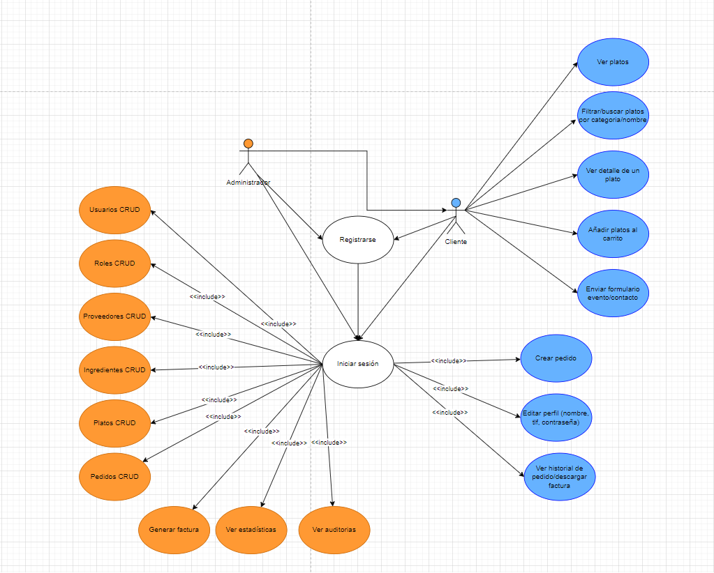

Diagramas de Casos de Uso
En esta sección encontrarás el diagrma de casos de uso del actor CLIENTE y el actor ADMIN. El diagrama muestra las interacciones principales que estos usuarios tienen con la plataforma TECOCINAMOS.
Actor: Cliente
El Cliente puede:
- Ver el catálogo de platos disponibles
- Filtrar por categorías o buscar por nombre
- Ver el detalle de cada plato (ingredientes, alérgenos, imágenes)
- Añadir uno o varios platos al carrito
- Elegir fecha de entrega y dirección para su pedido
- Confirmar el pedido y recibir notificación por email
- Ver su historial de pedidos con estado y descargar factura PDF
- Editar datos de perfil (nombre, teléfono, contraseña)
- Enviar formulario de contacto general (Contáctanos) → recibe correo de confirmación automática
- Enviar consulta de evento → recibe correo de confirmación automática
- Recibir factura en PDF al realizar pedido

Actor: Administrador (ADMIN)
El Administrador puede:
- Gestionar usuarios: crear, editar, asignar roles y dar de baja (baja lógica y anonimización de datos)
- Gestionar roles: CRUD completo para roles (CLIENTE, ADMIN, COCINERO, etc.)
- Gestionar categorías y alérgenos: CRUD completo
- Gestionar proveedores e ingredientes: CRUD y control de stock
- Gestionar platos: CRUD, asignar ingredientes y nombre base de imagen
- Gestionar pedidos: ver listado, filtrar por estado, cambiar estado
- Generar facturas en PDF para pedidos concretos
- Visualizar estadísticas de ventas, stock bajo y facturación mensual
- Visualizar mapa con pedidos “En Camino” para optimizar reparto